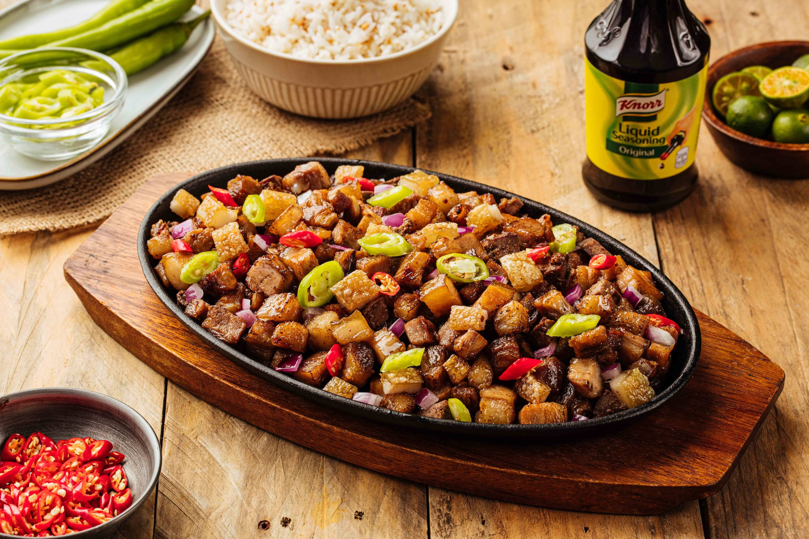

Crispy Sisig is a popular Filipino dish known for its bold, savory flavors and crunchy texture. It's a dish made from pork (usually parts like the face, ears, and sometimes liver) that's been simmered, chopped, and then crisped up to perfection. Sisig is typically served sizzling on a hot plate and is often enjoyed as a snack, appetizer, or even as a main course.

Crispy Sisig Sizzling on a Hot Plate
Ingredients
2 kg whole pork liempo (lechon kawali cut)
1 tablespoon rock salt
2 pcs onion, cut into wedges
water, enough to cover pork
canola oil (for deep frying)
2 tablespoon chopped garlic
1/2 kilogram chicken liver, cut into small cubes
1 cup chopped onions
3-4 pcs green chillies, sliced
2-4 tablespoon Knorr Seasoning
2 tablespoon calamansi juice
ground black pepper to taste
Directions
Let's begin by getting a pot and filling it with water then add salt, onion wedges and the pork belly or lechon kawali. Cook until tender. Drain from the water and set aside on a plate or tray to cool and air-dry.
Get a shallow pan and make it nice and hot. Pour enough oil and deep fry tenderized pork until crisp and golden brown. Let cool and chop coarsely.
Using another pan, throw in the garlic and liver. Saute until fully cooked.
Off heat, toss in the onions, chopped crispy pork and green chillies. Season with more Knorr Liquid Seasoning, calamansi juice and pepper. And that's it!